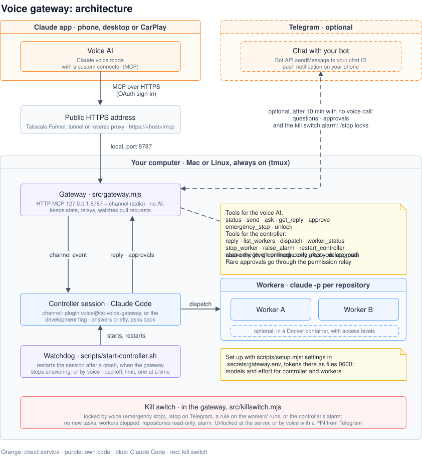

In the car
With CarPlay or Android Auto, wherever the Claude app offers voice mode. Ask on the way to work; the pull request is ready when you arrive.
“Why did the build fail on main? Fix it and open a pull request.”
Talk to Claude in the car, on a walk, or at your desk while you keep using mouse and keyboard as usual. A team of Claude Code agents on your own computer does the work, in parallel and as pull requests, and tells you how it went.
An open-source prototype that connects Claude's voice mode to Claude Code.
Two minutes, with voiceover and captions.
Claude's voice mode is a great partner to think out loud with, but it can't reach Claude Code, the agent that does the real work in your repositories. In the Claude app, Claude Code only has dictation. cc-voice-gateway is the bridge: Claude's voice mode calls it as a custom connector, and it passes your request to Claude Code on your computer.
Claude's voice mode becomes the front end of your Claude Code sessions. It understands you in any language and keeps the context; the answers are written to be heard: short, the result first, no code, no file paths, no URLs.
With CarPlay or Android Auto, wherever the Claude app offers voice mode. Ask on the way to work; the pull request is ready when you arrive.
“Why did the build fail on main? Fix it and open a pull request.”
Keep a voice conversation running in the Claude app while you go on working with mouse and keyboard. Delegate the chores without leaving what you are doing.
“Tell the alpha worker to update the changelog.”
On a walk, at the gym, between two meetings. Research, drafts and calculations go to a work folder of their own; the files wait at your desk.
“In a new work folder: compare the three phone plans.”
You talk to one assistant. Behind it, three layers of AI split the work, each doing what it is best at, so that the conversation stays short and the work gets done properly.
Claude voice mode, in the Claude app
A Claude Code session on your computer
Claude Code runs, in your repositories
Between them sits the gateway: one small Node.js process on your computer that relays, keeps the state, and guards. It has no AI of its own, so its rules hold whatever any model is told.
Say the next task while the last one is still running. The controller decides where it goes, and the gateway keeps them from stepping on each other.
| Worker and task | Progress | State |
|---|---|---|
| alphaFix the date test | PR #12 open | |
| alpha, worktree 2Update the changelog | running | |
| betaAdd the API docs | running | |
| work folderCompare three phone plans | running | |
| gamma, in DockerUpgrade the dependencies | running | |
| queuedRelease notes, after the changelog | waiting |
An example of what runs at once.
Work takes minutes, conversations end. The results, the questions and the reviews find their way back to you, in a sentence or two.
Built on the assumption that any text a worker reads may try to trick it. The important guarantees live in the gateway's code, not in a prompt.
Every change lands on a voice/ branch as a pull request, and CI, code owners and review bots run as usual. You review it at your desk.
Claude asks back with the title and the method; then Claude Code asks for an approval, which you give by voice.
Workers start only on words from your recent voice request, never on text that a pull request, a review or a web page brought in.
Workers on your computer, or in Docker, where the GitHub token decides: local commits only, pull requests, or also a direct push.
By default it may read its own folder and the status of pull requests; a hook blocks every other tool. Two higher levels are yours to choose.
Sign-in only with a pairing code from your computer, the endpoint only for Anthropic's addresses, and an alert on Telegram for anything odd.
“Emergency stop.”
Say it, or send /stop on Telegram: the gateway locks in its own code, every worker stops,
approvals are denied, and only you can unlock it: at your computer, or in voice mode with a PIN that
comes to your Telegram. Rules lock it too, for example when
a worker writes outside its repository.
Name the repository the way its folder is called, or none for a task of its own. Start with “Ask Claude Code …” or “Tell Claude Code …”; within a conversation, follow-ups go there by themselves.
Everything runs on a Mac or Linux computer of yours that stays on. A setup assistant walks you through the keys and settings; the technical README has every step.
Install the dependencies and run the setup assistant, a temporary page that writes the settings and starts the controller.
node scripts/setup.mjsPublish the gateway over HTTPS, add it as a custom connector, and sign in with an eight-digit pairing code from your computer.
Open voice mode with the same account and try it:
“Ask Claude Code whether the gateway is up.”

More diagrams, from a single request to the security design, are in the technical README.
Keep your full attention on the traffic, not on the conversation or the work. It is built so that you can, at any moment: open items and unanswered questions are kept, and when you come back, ask for the status and everything is listed, brought up to date and followed up.
Use it at your own risk, and only where it is safe and legal. Follow the traffic rules and laws where you drive, including those on phone use. The authors accept no liability for accidents, injuries or damage of any kind arising from its use.
cc-voice-gateway is solely a prototype of an idea: a way to use Claude Code from Claude's voice mode, which cannot reach Claude Code on its own. It comes without warranty and without support, and there is no communication of any kind about this project: no announcements, no support, no answers to issues or messages. It is not an Anthropic product.
You use it at your own risk. No liability is accepted for accidents, injuries or damage of any kind arising from its use; see sections 7 and 8 of the Apache License 2.0.